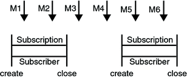
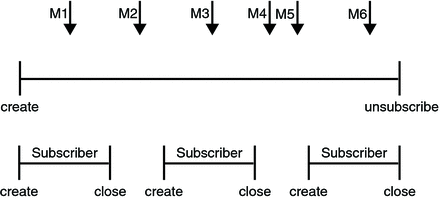
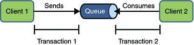
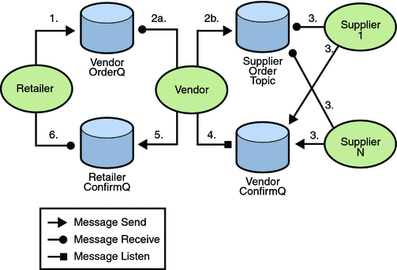

Creating Robust JMS Applications
This section explains how to use features of the JMS API to achieve the level of reliability and performance your application requires. Many people choose to implement JMS applications because they cannot tolerate dropped or duplicate messages and require that every message be received once and only once. The JMS API provides this functionality.
The most reliable way to produce a message is to send a PERSISTENT message within a transaction. JMS messages are PERSISTENT by default. A transaction is a unit of work into which you can group a series of operations, such as message sends and receives, so that the operations either all succeed or all fail. For details, see Specifying Message Persistence and Using JMS API Local Transactions.
The most reliable way to consume a message is to do so within a transaction, either from a queue or from a durable subscription to a topic. For details, see Creating Temporary Destinations, Creating Durable Subscriptions, and Using JMS API Local Transactions.
For other applications, a lower level of reliability can reduce overhead and improve performance. You can send messages with varying priority levels (see Setting Message Priority Levels) and you can set them to expire after a certain length of time (see Allowing Messages to Expire).
The JMS API provides several ways to achieve various kinds and degrees of reliability. This section divides them into two categories:
The following sections describe these features as they apply to JMS clients. Some of the features work differently in Java EE applications; in these cases, the differences are noted here and are explained in detail in Using the JMS API in a Java EE Application.
This section includes three sample programs, which you can find in the directory tut-install/javaeetutorial5/examples/jms/advanced/. Each sample uses a utility class called SampleUtilities.java.
Using Basic Reliability Mechanisms
The basic mechanisms for achieving or affecting reliable message delivery are as follows:
Controlling message acknowledgment: You can specify various levels of control over message acknowledgment.
Specifying message persistence: You can specify that messages are persistent, meaning that they must not be lost in the event of a provider failure.
Setting message priority levels: You can set various priority levels for messages, which can affect the order in which the messages are delivered.
Allowing messages to expire: You can specify an expiration time for messages so that they will not be delivered if they are obsolete.
Creating temporary destinations: You can create temporary destinations that last only for the duration of the connection in which they are created.
Controlling Message Acknowledgment
Until a JMS message has been acknowledged, it is not considered to be successfully consumed. The successful consumption of a message ordinarily takes place in three stages.
The client receives the message.
The client processes the message.
The message is acknowledged. Acknowledgment is initiated either by the JMS provider or by the client, depending on the session acknowledgment mode.
In transacted sessions (see Using JMS API Local Transactions), acknowledgment happens automatically when a transaction is committed. If a transaction is rolled back, all consumed messages are redelivered.
In nontransacted sessions, when and how a message is acknowledged depend on the value specified as the second argument of the createSession method. The three possible argument values are as follows:
Session.AUTO_ACKNOWLEDGE: The session automatically acknowledges a client’s receipt of a message either when the client has successfully returned from a call to receive or when the MessageListener it has called to process the message returns successfully. A synchronous receive in an AUTO_ACKNOWLEDGE session is the one exception to the rule that message consumption is a three-stage process as described earlier.
In this case, the receipt and acknowledgment take place in one step, followed by the processing of the message.
Session.CLIENT_ACKNOWLEDGE: A client acknowledges a message by calling the message’s acknowledge method. In this mode, acknowledgment takes place on the session level: Acknowledging a consumed message automatically acknowledges the receipt of all messages that have been consumed by its session. For example, if a message consumer consumes ten messages and then acknowledges the fifth message delivered, all ten messages are acknowledged.
Session.DUPS_OK_ACKNOWLEDGE: This option instructs the session to lazily acknowledge the delivery of messages. This is likely to result in the delivery of some duplicate messages if the JMS provider fails, so it should be used only by consumers that can tolerate duplicate messages. (If the JMS provider redelivers a message, it must set the value of the JMSRedelivered message header to true.) This option can reduce session overhead by minimizing the work the session does to prevent duplicates.
If messages have been received from a queue but not acknowledged when a session terminates, the JMS provider retains them and redelivers them when a consumer next accesses the queue. The provider also retains unacknowledged messages for a terminated session that has a durable TopicSubscriber. (See Creating Durable Subscriptions.) Unacknowledged messages for a nondurable TopicSubscriber are dropped when the session is closed.
If you use a queue or a durable subscription, you can use the Session.recover method to stop a nontransacted session and restart it with its first unacknowledged message. In effect, the session’s series of delivered messages is reset to the point after its last acknowledged message. The messages it now delivers may be different from those that were originally delivered, if messages have expired or if higher-priority messages have arrived. For a nondurable TopicSubscriber, the provider may drop unacknowledged messages when its session is recovered.
The sample program in the next section demonstrates two ways to ensure that a message will not be acknowledged until processing of the message is complete.
A Message Acknowledgment Example
The AckEquivExample.java program shows how both of the following two scenarios ensure that a message will not be acknowledged until processing of it is complete:
Using an asynchronous message consumer (a message listener) in an AUTO_ACKNOWLEDGE session
Using a synchronous receiver in a CLIENT_ACKNOWLEDGE session
With a message listener, the automatic acknowledgment happens when the onMessage method returns (that is, after message processing has finished). With a synchronous receiver, the client acknowledges the message after processing is complete. If you use AUTO_ACKNOWLEDGE with a synchronous receive, the acknowledgment happens immediately after the receive call; if any subsequent processing steps fail, the message cannot be redelivered.
The program is in the following directory:
tut-install/javaeetutorial5/examples/jms/advanced/ackequivexample/src/java/
The program contains a SynchSender class, a SynchReceiver class, an AsynchSubscriber class with a TextListener class, a MultiplePublisher class, a main method, and a method that runs the other classes’ threads.
The program uses the following objects:
jms/ConnectionFactory, jms/Queue, and jms/Topic: resources that you created in Creating JMS Administered Objects for the Synchronous Receive Example
jms/ControlQueue: an additional queue
jms/DurableConnectionFactory: a connection factory with a client ID (see Creating Durable Subscriptions, for more information)
To create the new queue and connection factory, you can use Ant targets defined in the file tut-install/javaeetutorial5/examples/jms/advanced/ackequivexample/build.xml.
To run this example, follow these steps:
In a terminal window, go to the following directory:
tut-install/javaeetutorial5/examples/jms/advanced/ackequivexample/
To create the objects needed in this example, type the following commands:
ant create-control-queue ant create-durable-cf
To compile and package the program using NetBeans IDE, follow these steps:
In NetBeans IDE, choose Open Project from the File menu.
In the Open Project dialog, navigate to tut-install/javaeetutorial5/examples/jms/advanced/.
Select the ackequivexample folder.
Select the Open as Main Project check box.
Click Open Project.
Right-click the project and choose Build.
To compile and package the program using Ant, type the following command:
ant
To run the program using NetBeans IDE, right-click the ackequivexample project and choose Run.
To run the program from the command line, follow these steps:
Go to the dist directory:
cd dist
Type the following command:
appclient -client ackequivexample.jar
The program output looks something like this:
Queue name is jms/ControlQueue Queue name is jms/Queue Topic name is jms/Topic Connection factory name is jms/DurableConnectionFactory SENDER: Created client-acknowledge session SENDER: Sending message: Here is a client-acknowledge message RECEIVER: Created client-acknowledge session RECEIVER: Processing message: Here is a client-acknowledge message RECEIVER: Now I’ll acknowledge the message SUBSCRIBER: Created auto-acknowledge session SUBSCRIBER: Sending synchronize message to control queue PUBLISHER: Created auto-acknowledge session PUBLISHER: Receiving synchronize messages from control queue; count = 1 PUBLISHER: Received synchronize message; expect 0 more PUBLISHER: Publishing message: Here is an auto-acknowledge message 1 PUBLISHER: Publishing message: Here is an auto-acknowledge message 2 SUBSCRIBER: Processing message: Here is an auto-acknowledge message 1 PUBLISHER: Publishing message: Here is an auto-acknowledge message 3 SUBSCRIBER: Processing message: Here is an auto-acknowledge message 2 SUBSCRIBER: Processing message: Here is an auto-acknowledge message 3
After you run the program, you can delete the destination resource jms/ControlQueue. Go to the directory tut-install/javaeetutorial5/examples/jms/advanced/ackequivexample/ and type the following command:
ant delete-control-queue
You will need the other resources for other examples.
To delete the class and JAR files for the program using NetBeans IDE, right-click the project and choose Clean.
To delete the class and JAR files for the program using Ant, type the following:
ant clean
Specifying Message Persistence
The JMS API supports two delivery modes for messages to specify whether messages are lost if the JMS provider fails. These delivery modes are fields of the DeliveryMode interface.
The PERSISTENT delivery mode, which is the default, instructs the JMS provider to take extra care to ensure that a message is not lost in transit in case of a JMS provider failure. A message sent with this delivery mode is logged to stable storage when it is sent.
The NON_PERSISTENT delivery mode does not require the JMS provider to store the message or otherwise guarantee that it is not lost if the provider fails.
You can specify the delivery mode in either of two ways.
You can use the setDeliveryMode method of the MessageProducer interface to set the delivery mode for all messages sent by that producer. For example, the following call sets the delivery mode to NON_PERSISTENT for a producer:
producer.setDeliveryMode(DeliveryMode.NON_PERSISTENT);
You can use the long form of the send or the publish method to set the delivery mode for a specific message. The second argument sets the delivery mode. For example, the following send call sets the delivery mode for message to NON_PERSISTENT:
producer.send(message, DeliveryMode.NON_PERSISTENT, 3, 10000);
The third and fourth arguments set the priority level and expiration time, which are described in the next two subsections.
If you do not specify a delivery mode, the default is PERSISTENT. Using the NON_PERSISTENT delivery mode may improve performance and reduce storage overhead, but you should use it only if your application can afford to miss messages.
Setting Message Priority Levels
You can use message priority levels to instruct the JMS provider to deliver urgent messages first. You can set the priority level in either of two ways.
You can use the setPriority method of the MessageProducer interface to set the priority level for all messages sent by that producer. For example, the following call sets a priority level of 7 for a producer:
producer.setPriority(7);
You can use the long form of the send or the publish method to set the priority level for a specific message. The third argument sets the priority level. For example, the following send call sets the priority level for message to 3:
producer.send(message, DeliveryMode.NON_PERSISTENT, 3, 10000);
The ten levels of priority range from 0 (lowest) to 9 (highest). If you do not specify a priority level, the default level is 4. A JMS provider tries to deliver higher-priority messages before lower-priority ones but does not have to deliver messages in exact order of priority.
Allowing Messages to Expire
By default, a message never expires. If a message will become obsolete after a certain period, however, you may want to set an expiration time. You can do this in either of two ways.
You can use the setTimeToLive method of the MessageProducer interface to set a default expiration time for all messages sent by that producer. For example, the following call sets a time to live of one minute for a producer:
producer.setTimeToLive(60000);
You can use the long form of the send or the publish method to set an expiration time for a specific message. The fourth argument sets the expiration time in milliseconds. For example, the following send call sets a time to live of 10 seconds:
producer.send(message, DeliveryMode.NON_PERSISTENT, 3, 10000);
If the specified timeToLive value is 0, the message never expires.
When the message is sent, the specified timeToLive is added to the current time to give the expiration time. Any message not delivered before the specified expiration time is destroyed. The destruction of obsolete messages conserves storage and computing resources.
Creating Temporary Destinations
Normally, you create JMS destinations (queues and topics) administratively rather than programmatically. Your JMS provider includes a tool that you use to create and remove destinations, and it is common for destinations to be long-lasting.
The JMS API also enables you to create destinations (TemporaryQueue and TemporaryTopic objects) that last only for the duration of the connection in which they are created. You create these destinations dynamically using the Session.createTemporaryQueue and the Session.createTemporaryTopic methods.
The only message consumers that can consume from a temporary destination are those created by the same connection that created the destination. Any message producer can send to the temporary destination. If you close the connection that a temporary destination belongs to, the destination is closed and its contents are lost.
You can use temporary destinations to implement a simple request/reply mechanism. If you create a temporary destination and specify it as the value of the JMSReplyTo message header field when you send a message, then the consumer of the message can use the value of the JMSReplyTo field as the destination to which it sends a reply. The consumer can also reference the original request by setting the JMSCorrelationID header field of the reply message to the value of the JMSMessageID header field of the request. For example, an onMessage method can create a session so that it can send a reply to the message it receives. It can use code such as the following:
producer = session.createProducer(msg.getJMSReplyTo());
replyMsg = session.createTextMessage("Consumer " +
"processed message: " + msg.getText());
replyMsg.setJMSCorrelationID(msg.getJMSMessageID());
producer.send(replyMsg);For more examples, see Chapter 32, Java EE Examples Using the JMS API.
Using Advanced Reliability Mechanisms
The more advanced mechanisms for achieving reliable message delivery are the following:
Creating durable subscriptions: You can create durable topic subscriptions, which receive messages published while the subscriber is not active. Durable subscriptions offer the reliability of queues to the publish/subscribe message domain.
Using local transactions: You can use local transactions, which allow you to group a series of sends and receives into an atomic unit of work. Transactions are rolled back if they fail at any time.
Creating Durable Subscriptions
To ensure that a pub/sub application receives all published messages, use PERSISTENT delivery mode for the publishers. In addition, use durable subscriptions for the subscribers.
The Session.createConsumer method creates a nondurable subscriber if a topic is specified as the destination. A nondurable subscriber can receive only messages that are published while it is active.
At the cost of higher overhead, you can use the Session.createDurableSubscriber method to create a durable subscriber. A durable subscription can have only one active subscriber at a time.
A durable subscriber registers a durable subscription by specifying a unique identity that is retained by the JMS provider. Subsequent subscriber objects that have the same identity resume the subscription in the state in which it was left by the preceding subscriber. If a durable subscription has no active subscriber, the JMS provider retains the subscription’s messages until they are received by the subscription or until they expire.
You establish the unique identity of a durable subscriber by setting the following:
A client ID for the connection
A topic and a subscription name for the subscriber
You set the client ID administratively for a client-specific connection factory using the Admin Console.
After using this connection factory to create the connection and the session, you call the createDurableSubscriber method with two arguments: the topic and a string that specifies the name of the subscription:
String subName = "MySub";
MessageConsumer topicSubscriber =
session.createDurableSubscriber(myTopic, subName);The subscriber becomes active after you start the Connection or TopicConnection. Later, you might close the subscriber:
topicSubscriber.close();
The JMS provider stores the messages sent or published to the topic, as it would store messages sent to a queue. If the program or another application calls createDurableSubscriber using the same connection factory and its client ID, the same topic, and the same subscription name, the subscription is reactivated, and the JMS provider delivers the messages that were published while the subscriber was inactive.
To delete a durable subscription, first close the subscriber, and then use the unsubscribe method, with the subscription name as the argument:
topicSubscriber.close();
session.unsubscribe("MySub");The unsubscribe method deletes the state that the provider maintains for the subscriber.
Figure 31-7 and Figure 31-8 show the difference between a nondurable and a durable subscriber. With an ordinary, nondurable subscriber, the subscriber and the subscription begin and end at the same point and are, in effect, identical. When a subscriber is closed, the subscription also ends. Here, create stands for a call to Session.createConsumer with a Topic argument, and close stands for a call to MessageConsumer.close. Any messages published to the topic between the time of the first close and the time of the second create are not consumed by the subscriber. In Figure 31-7, the subscriber consumes messages M1, M2, M5, and M6, but messages M3 and M4 are lost.
Figure 31-7 Nondurable Subscribers and Subscriptions
With a durable subscriber, the subscriber can be closed and re-created, but the subscription continues to exist and to hold messages until the application calls the unsubscribe method. In Figure 31-8, create stands for a call to Session.createDurableSubscriber, close stands for a call to MessageConsumer.close, and unsubscribe stands for a call to Session.unsubscribe. Messages published while the subscriber is closed are received when the subscriber is created again. So even though messages M2, M4, and M5 arrive while the subscriber is closed, they are not lost.
Figure 31-8 A Durable Subscriber and Subscription
See A Java EE Application That Uses the JMS API with a Session Bean for an example of a Java EE application that uses durable subscriptions. See A Message Acknowledgment Example and the next section for examples of client applications that use durable subscriptions.
A Durable Subscription Example
The DurableSubscriberExample.java program shows how durable subscriptions work. It demonstrates that a durable subscription is active even when the subscriber is not active. The program contains a DurableSubscriber class, a MultiplePublisher class, a main method, and a method that instantiates the classes and calls their methods in sequence.
The program is in the following directory:
tut-install/javaeetutorial5/examples/jms/advanced/durablesubscriberexample/src/java/
The program begins in the same way as any publish/subscribe program: The subscriber starts, the publisher publishes some messages, and the subscriber receives them. At this point, the subscriber closes itself. The publisher then publishes some messages while the subscriber is not active. The subscriber then restarts and receives the messages.
Before you run this program, compile and package the source file and create a connection factory that has a client ID. Perform the following steps:
To compile and package the program using NetBeans IDE, follow these steps:
In NetBeans IDE, choose Open Project from the File menu.
In the Open Project dialog, navigate to tut-install/javaeetutorial5/examples/jms/advanced/.
Select the durablesubscriberexample folder.
Select the Open as Main Project check box.
Click Open Project.
Right-click the project and choose Build.
To compile and package the program using Ant, follow these steps:
Go to the following directory:
tut-install/javaeetutorial5/examples/jms/advanced/durablesubscriberexample/
Type the following command:
ant
If you did not do so for A Message Acknowledgment Example, create a connection factory named jms/DurableConnectionFactory:
ant create-durable-cf
To run the program using NetBeans IDE, right-click the durablesubscriberexample project and choose Run.
To run the program from the command line, follow these steps:
Go to the dist directory:
cd dist
Type the following command:
appclient -client durablesubscriberexample.jar
The output looks something like this:
Connection factory without client ID is jms/ConnectionFactory Connection factory with client ID is jms/DurableConnectionFactory Topic name is jms/Topic Starting subscriber PUBLISHER: Publishing message: Here is a message 1 SUBSCRIBER: Reading message: Here is a message 1 PUBLISHER: Publishing message: Here is a message 2 SUBSCRIBER: Reading message: Here is a message 2 PUBLISHER: Publishing message: Here is a message 3 SUBSCRIBER: Reading message: Here is a message 3 Closing subscriber PUBLISHER: Publishing message: Here is a message 4 PUBLISHER: Publishing message: Here is a message 5 PUBLISHER: Publishing message: Here is a message 6 Starting subscriber SUBSCRIBER: Reading message: Here is a message 4 SUBSCRIBER: Reading message: Here is a message 5 SUBSCRIBER: Reading message: Here is a message 6 Closing subscriber Unsubscribing from durable subscription
After you run the program, you can delete the connection factory jms/DurableConnectionFactory. Go to the directory tut-install/javaeetutorial5/examples/jms/advanced/durablesubscriberexample/ and type the following command:
ant delete-durable-cf
To delete the class and JAR files for the program using NetBeans IDE, right-click the project and choose Clean.
To delete the class and JAR files for the program using Ant, type the following:
ant clean
Using JMS API Local Transactions
You can group a series of operations into an atomic unit of work called a transaction. If any one of the operations fails, the transaction can be rolled back, and the operations can be attempted again from the beginning. If all the operations succeed, the transaction can be committed.
In a JMS client, you can use local transactions to group message sends and receives. The JMS API Session interface provides commit and rollback methods that you can use in a JMS client. A transaction commit means that all produced messages are sent and all consumed messages are acknowledged. A transaction rollback means that all produced messages are destroyed and all consumed messages are recovered and redelivered unless they have expired (see Allowing Messages to Expire).
A transacted session is always involved in a transaction. As soon as the commit or the rollback method is called, one transaction ends and another transaction begins. Closing a transacted session rolls back its transaction in progress, including any pending sends and receives.
In an Enterprise JavaBeans component, you cannot use the Session.commit and Session.rollback methods. Instead, you use distributed transactions, which are described in Using the JMS API in a Java EE Application.
You can combine several sends and receives in a single JMS API local transaction. If you do so, you need to be careful about the order of the operations. You will have no problems if the transaction consists of all sends or all receives or if the receives come before the sends. But if you try to use a request/reply mechanism, whereby you send a message and then try to receive a reply to the sent message in the same transaction, the program will hang, because the send cannot take place until the transaction is committed. The following code fragment illustrates the problem:
// Don’t do this! outMsg.setJMSReplyTo(replyQueue); producer.send(outQueue, outMsg); consumer = session.createConsumer(replyQueue); inMsg = consumer.receive(); session.commit();
Because a message sent during a transaction is not actually sent until the transaction is committed, the transaction cannot contain any receives that depend on that message’s having been sent.
In addition, the production and the consumption of a message cannot both be part of the same transaction. The reason is that the transactions take place between the clients and the JMS provider, which intervenes between the production and the consumption of the message. Figure 31-9 illustrates this interaction.
Figure 31-9 Using JMS API Local Transactions
The sending of one or more messages to one or more destinations by client 1 can form a single transaction, because it forms a single set of interactions with the JMS provider using a single session. Similarly, the receiving of one or more messages from one or more destinations by client 2 also forms a single transaction using a single session. But because the two clients have no direct interaction and are using two different sessions, no transactions can take place between them.
Another way of putting this is that the act of producing and/or consuming messages in a session can be transactional, but the act of producing and consuming a specific message across different sessions cannot be transactional.
This is the fundamental difference between messaging and synchronized processing. Instead of tightly coupling the sending and receiving of data, message producers and consumers use an alternative approach to reliability, one that is built on a JMS provider’s ability to supply a once-and-only-once message delivery guarantee.
When you create a session, you specify whether it is transacted. The first argument to the createSession method is a boolean value. A value of true means that the session is transacted; a value of false means that it is not transacted. The second argument to this method is the acknowledgment mode, which is relevant only to nontransacted sessions (see Controlling Message Acknowledgment). If the session is transacted, the second argument is ignored, so it is a good idea to specify 0 to make the meaning of your code clear. For example:
session = connection.createSession(true, 0);
The commit and the rollback methods for local transactions are associated with the session. You can combine queue and topic operations in a single transaction if you use the same session to perform the operations. For example, you can use the same session to receive a message from a queue and send a message to a topic in the same transaction.
You can pass a client program’s session to a message listener’s constructor function and use it to create a message producer. In this way, you can use the same session for receives and sends in asynchronous message consumers.
The next section provides an example of the use of JMS API local transactions.
A Local Transaction Example
The TransactedExample.java program demonstrates the use of transactions in a JMS client application. The program is in the following directory:
tut-install/javaeetutorial5/examples/jms/advanced/transactedexample/src/java/
This example shows how to use a queue and a topic in a single transaction as well as how to pass a session to a message listener’s constructor function. The program represents a highly simplified e-commerce application in which the following things happen.
A retailer sends a MapMessage to the vendor order queue, ordering a quantity of computers, and waits for the vendor’s reply:
producer = session.createProducer(vendorOrderQueue); outMessage = session.createMapMessage(); outMessage.setString("Item", "Computer(s)"); outMessage.setInt("Quantity", quantity); outMessage.setJMSReplyTo(retailerConfirmQueue); producer.send(outMessage); System.out.println("Retailer: ordered " + quantity + " computer(s)"); orderConfirmReceiver = session.createConsumer(retailerConfirmQueue); connection.start();The vendor receives the retailer’s order message and sends an order message to the supplier order topic in one transaction. This JMS transaction uses a single session, so you can combine a receive from a queue with a send to a topic. Here is the code that uses the same session to create a consumer for a queue and a producer for a topic:
vendorOrderReceiver = session.createConsumer(vendorOrderQueue); supplierOrderProducer = session.createProducer(supplierOrderTopic);
The following code receives the incoming message, sends an outgoing message, and commits the session. The message processing has been removed to keep the sequence simple:
inMessage = vendorOrderReceiver.receive(); // Process the incoming message and format the outgoing // message ... supplierOrderProducer.send(orderMessage); ... session.commit();
Each supplier receives the order from the order topic, checks its inventory, and then sends the items ordered to the queue named in the order message’s JMSReplyTo field. If it does not have enough in stock, the supplier sends what it has. The synchronous receive from the topic and the send to the queue take place in one JMS transaction.
receiver = session.createConsumer(orderTopic); ... inMessage = receiver.receive(); if (inMessage instanceof MapMessage) { orderMessage = (MapMessage) inMessage; } // Process message MessageProducer producer = session.createProducer((Queue) orderMessage.getJMSReplyTo()); outMessage = session.createMapMessage(); // Add content to message producer.send(outMessage); // Display message contentssession.commit();The vendor receives the replies from the suppliers from its confirmation queue and updates the state of the order. Messages are processed by an asynchronous message listener; this step shows the use of JMS transactions with a message listener.
MapMessage component = (MapMessage) message; ... orderNumber = component.getInt("VendorOrderNumber"); Order order = Order.getOrder(orderNumber).processSubOrder(component); session.commit();When all outstanding replies are processed for a given order, the vendor message listener sends a message notifying the retailer whether it can fulfill the order.
Queue replyQueue = (Queue) order.order.getJMSReplyTo(); MessageProducer producer = session.createProducer(replyQueue); MapMessage retailerConfirmMessage = session.createMapMessage(); // Format the message producer.send(retailerConfirmMessage); session.commit();
The retailer receives the message from the vendor:
inMessage = (MapMessage) orderConfirmReceiver.receive();
Figure 31-10 illustrates these steps.
Figure 31-10 Transactions: JMS Client Example
The program contains five classes: Retailer, Vendor, GenericSupplier, VendorMessageListener, and Order. The program also contains a main method and a method that runs the threads of the Retailer, Vendor, and two supplier classes.
All the messages use the MapMessage message type. Synchronous receives are used for all message reception except for the case of the vendor processing the replies of the suppliers. These replies are processed asynchronously and demonstrate how to use transactions within a message listener.
At random intervals, the Vendor class throws an exception to simulate a database problem and cause a rollback.
All classes except Retailer use transacted sessions.
The program uses three queues named jms/AQueue, jms/BQueue, and jms/CQueue, and one topic named jms/OTopic.
Before you run the program, do the following:
In a terminal window, go to the following directory:
tut-install/javaeetutorial5/examples/jms/advanced/transactedexample/
Create the necessary resources using the following command:
ant create-resources
This command creates three destination resources with the names jms/AQueue, jms/BQueue, and jms/CQueue, all of type javax.jms.Queue, and one destination resource with the name jms/OTopic, of type javax.jms.Topic.
To compile and package the program using NetBeans IDE, follow these steps:
In NetBeans IDE, choose Open Project from the File menu.
In the Open Project dialog, navigate to tut-install/javaeetutorial5/examples/jms/advanced/.
Select the transactedexample folder.
Select the Open as Main Project check box.
Click Open Project.
Right-click the project and choose Build.
To compile and package the program using Ant, follow these steps:
Go to the following directory:
tut-install/javaeetutorial5/examples/jms/advanced/transactedexample/
Type the following command:
ant
To run the program using NetBeans IDE, follow these steps:
Right-click the transactedexample project and choose Properties.
Select Run from the Categories tree.
In the Arguments field, type a number that specifies the number of computers to order:
3
Click OK.
Right-click the project and choose Run.
To run the program from the command line, follow these steps:
Go to the dist directory:
cd dist
Use a command like the following to run the program. The argument specifies the number of computers to order:
appclient -client transactedexample.jar 3
The output looks something like this:
Quantity to be ordered is 3
Retailer: ordered 3 computer(s)
Vendor: Retailer ordered 3 Computer(s)
Vendor: ordered 3 monitor(s) and hard drive(s)
Monitor Supplier: Vendor ordered 3 Monitor(s)
Monitor Supplier: sent 3 Monitor(s)
Monitor Supplier: committed transaction
Vendor: committed transaction 1
Hard Drive Supplier: Vendor ordered 3 Hard Drive(s)
Hard Drive Supplier: sent 1 Hard Drive(s)
Vendor: Completed processing for order 1
Hard Drive Supplier: committed transaction
Vendor: unable to send 3 computer(s)
Vendor: committed transaction 2
Retailer: Order not filled
Retailer: placing another order
Retailer: ordered 6 computer(s)
Vendor: JMSException occurred: javax.jms.JMSException:
Simulated database concurrent access exception
javax.jms.JMSException: Simulated database concurrent access exception
at TransactedExample$Vendor.run(Unknown Source)
Vendor: rolled back transaction 1
Vendor: Retailer ordered 6 Computer(s)
Vendor: ordered 6 monitor(s) and hard drive(s)
Monitor Supplier: Vendor ordered 6 Monitor(s)
Hard Drive Supplier: Vendor ordered 6 Hard Drive(s)
Monitor Supplier: sent 6 Monitor(s)
Monitor Supplier: committed transaction
Hard Drive Supplier: sent 6 Hard Drive(s)
Hard Drive Supplier: committed transaction
Vendor: committed transaction 1
Vendor: Completed processing for order 2
Vendor: sent 6 computer(s)
Retailer: Order filled
Vendor: committed transaction 2After you run the program, you can delete the physical destinations and the destination resources. Go to the directory tut-install/javaeetutorial5/examples/jms/advanced/transactedexample/ and type the following command:
ant delete-resources
Use the following command to remove the class and JAR files:
ant clean